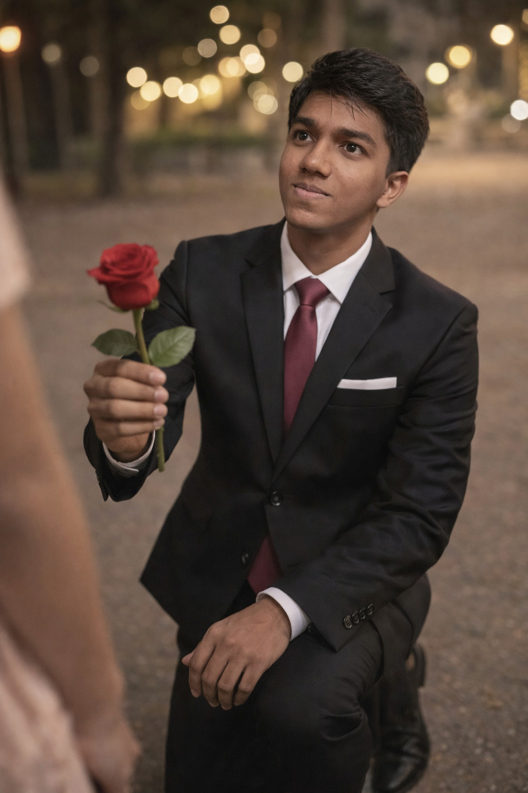

Enter our word to begin
🌹 You were never given love in simple ways. It didn’t arrive as reassurance or protection when you needed it most. And yet, instead of letting that absence turn into bitterness, you learned how to love gently. That choice—to remain soft when life was not—is something I carry a deep respect for.
💖 I see how much you give without keeping count. How you care even when you’re tired. How you hold space for others while quietly carrying your own weight. Your strength doesn’t announce itself—it exists in the way you keep showing up, even on days when it would be easier not to.
🌹 You were never asking for too much. You were asking for consistency. For presence. For someone who wouldn’t leave when things became uncomfortable or quiet. The fact that you still believed in that kind of love, after everything, tells me how deep your heart truly is.
💞 When you chose me, you didn’t do it blindly. You chose with awareness. With trust. With a courage that knew loving me meant vulnerability. That choice was not casual—it was intentional. And I don’t take that lightly for a single moment.
🌹 You don’t need to be strong here. You don’t need to hold yourself together or explain the days when you feel heavy. You are allowed to rest. You are allowed to lean. Every part of you—the hopeful parts and the hurting parts—has a place here.
💗 If the world ever made you feel like love had to be earned, let this be a quiet contradiction to that belief. Here, you are not measured by what you give or how much you endure. You are valued simply because you exist.
🌹 This page begins with a rose not as a gesture, but as a recognition. Of your resilience. Of your capacity to love deeply even when it scared you. Of the way you chose me with an open heart. And this is only the beginning of what I want to keep choosing—with you.
🌹 Loving deeply is not something everyone knows how to do, and it’s not something everyone recognizes when they receive it. But I see yours. I see how fully you give, how sincerely you care, how your love arrives without disguise. It matters more than you know.
💖 You love with attention. With patience. With a presence that doesn’t fade when things become quiet or difficult. That kind of love is rare, and it deserves to be met with steadiness—not uncertainty, not distance, not silence.
🌹 I want you to know this clearly: you are safe here. Safe to feel deeply. Safe to hope. Safe to care without fearing that it will be taken for granted or misunderstood. You don’t need to guard your heart in this space.
💞 Your love does not overwhelm me. It grounds me. It reminds me that being chosen—truly chosen—is not something to treat lightly. I hold what you give with intention, not carelessness.
🌹 If you ever wondered whether your love was too much, let this page answer you gently—it is not. It is honest. It is brave. And it is something I value deeply, not something I step away from.
💗 You don’t need to be afraid of losing yourself in loving me. I don’t want your sacrifice; I want your presence. I want the version of you that feels secure enough to rest, to breathe, to simply exist without fear.
🌹 Your love is not a risk I tolerate—it is a choice I stand by. And as long as you are here, you don’t stand alone in what you feel. I’m here too, choosing you back, quietly and consistently.
🌹 Some people promise love only when it feels light and uncomplicated. But you and I both know that real connection doesn’t live only in easy moments. It lives in the quiet, the uncertain, the days when emotions feel heavy and words don’t come easily.
💖 I want you to know that I don’t disappear when things become difficult. I don’t retreat when feelings deepen or when vulnerability shows its edges. Staying matters to me more than comfort ever could.
🌹 You’ve had to learn what it feels like when people leave—sometimes suddenly, sometimes slowly. That kind of history teaches caution. It teaches restraint. And yet, you still chose to open your heart. That courage is not something I overlook.
💞 When your thoughts feel tangled or your emotions feel too much to organize, you don’t need to make sense of them alone. You don’t need to present a calm version of yourself to be worthy of presence here.
🌹 I don’t expect perfection from you. I don’t need you to have everything figured out. I only ask for honesty—the kind you already give so naturally, even when it makes you vulnerable.
💗 If there are moments when you fear being too attached, too emotional, or too invested, let this be your reassurance: attachment doesn’t scare me. Depth doesn’t push me away. It reminds me why choosing you matters.
🌹 I’m here not because everything is easy, but because you are worth staying for—through uncertainty, through growth, through every version of tomorrow that we haven’t seen yet.
🌹 You’ve spent so much of your life wondering whether you were enough as you are. Whether love would stay if you stopped trying so hard. That kind of questioning leaves marks, even when you don’t talk about them out loud.
💖 I want you to hear this without doubt or hesitation: you don’t need to perform here. You don’t need to be softer, stronger, brighter, or quieter to be worthy of staying. You already belong.
🌹 The way you love isn’t something that needs fixing or adjusting. It doesn’t need to be toned down or controlled. It deserves to be met with respect, not resistance.
💞 If there are days when you feel unsure, when old fears try to convince you that acceptance is temporary, let this moment stand against that voice. I’m not here on borrowed time. I’m here by choice.
🌹 You are allowed to take up space in my life. With your thoughts. With your emotions. With your silences and your questions. None of it feels like too much to me.
💗 Love doesn’t always look like grand gestures. Sometimes it looks like quiet consistency—choosing someone again and again without needing reminders or reasons.
🌹 You don’t need to earn a place here. You don’t need to worry about being replaced or forgotten. You are already held in a way that doesn’t require proof—only presence.
🌹 Commitment doesn’t always arrive with certainty about the future. Sometimes it begins as a calm decision made in the present—to stay attentive, to remain open, to keep choosing honesty even when clarity takes time.
💖 I don’t measure what we have by how intense it feels on good days. I measure it by how it holds on ordinary ones—the days that ask for patience, understanding, and quiet effort rather than excitement.
🌹 You don’t need to worry about being forgotten once the moment passes. You are not something I experience briefly and then move on from. You are someone I consider, continuously, in the way I think and choose.
💞 If your heart ever wonders whether consistency can truly last, let this be an answer formed through actions, not declarations. I believe in showing up, again and again, without needing to announce it.
🌹 There will be days when emotions don’t align perfectly, when energy fades, when life asks more than it gives. Those moments don’t weaken what we have—they test how willing we are to remain present.
💗 I’m not here for a version of you that never struggles. I’m here for the real one—the one who feels deeply, questions quietly, and keeps going even when things feel uncertain.
🌹 This is what I choose: a connection that grows through steadiness, not pressure. Through patience, not fear. Through mutual care that doesn’t need to be proven—only lived.
🌹 There is a kind of tiredness that doesn’t come from work or effort, but from always having to be careful with your heart. From wondering when love might change its mind. I see that tiredness in you, and I don’t turn away from it.
💖 You don’t have to stay alert here. You don’t have to anticipate loss or prepare for distance. This is a place where your shoulders can finally relax, where silence doesn’t mean abandonment.
🌹 I don’t need you to have answers all the time. I don’t need you to be certain or confident or strong every day. I only need you to be real—and even that doesn’t have to be constant.
💞 If there are moments when you feel overwhelmed by your own emotions, you don’t have to hide them. You don’t have to minimize them to keep peace. They are allowed to exist here without judgment.
🌹 You were never asking for too much comfort. You were asking for the right kind—the kind that doesn’t disappear when things get quiet or complicated.
💗 Rest doesn’t mean giving up. Sometimes it means trusting that someone else can hold things steady for a while. And I want you to know that I can do that when you need it.
🌹 If this world has taught you to stay guarded, let this be the place where you slowly unlearn that habit. Not all at once. Just enough to breathe a little easier—together.
🌹 There is a difference between being alone and being quiet with someone who understands you. You’ve known the first too well. The second is rarer—and it’s something I want you to experience without fear.
💖 Silence doesn’t worry me when it comes from you. It doesn’t feel like distance or withdrawal. It feels like trust—like two people existing side by side without needing to explain themselves.
🌹 You don’t need to fill every moment with words here. You don’t need to keep the connection alive through effort. Some bonds are strong enough to breathe on their own.
💞 If there are days when you feel quiet, withdrawn, or unsure how to express what’s inside you, you don’t owe me clarity right away. Your silence doesn’t make me doubt you—it makes me listen more carefully.
🌹 You were never meant to be constantly available or endlessly expressive. You are allowed to retreat gently without being misunderstood. I won’t mistake your quiet for absence.
💗 Trust grows in moments like this—not in declarations, but in shared calm. In knowing that even when nothing is being said, nothing is being lost.
🌹 And if one day you sit beside me with nothing to offer but your presence, let that be enough. I won’t ask you to be louder. I’ll stay right there, comfortable in the quiet we share.
🌹 Being with someone isn’t about knowing everything about them all at once. It’s about choosing to learn them slowly, patiently, without rushing the process or demanding certainty before it’s ready to exist.
💖 I’m learning you in the quiet details—the way your thoughts drift, the way your emotions deepen before you speak them, the way you feel things fully even when you try not to show it.
🌹 You don’t need to present a finished version of yourself. Growth doesn’t require an audience, and healing doesn’t follow a schedule. I’m not waiting for you to become someone else—I’m here with who you are now.
💞 There will be moments when we misunderstand each other. When words don’t land the way they were meant to. Those moments don’t scare me. They’re part of learning how to care better, not signs of something breaking.
🌹 I want us to ask questions instead of making assumptions. To pause instead of pulling away. To choose understanding even when it takes effort and patience.
💗 You don’t have to worry about being too complex or too layered to be known. Complexity isn’t distance—it’s depth. And depth is something I’m willing to meet.
🌹 This is how trust grows—not through perfection, but through two people choosing to keep learning each other, even when the answers take time to unfold.
🌹 There are moments when life doesn’t give clear answers. When the future feels distant and the present feels heavy. You’ve learned how unsettling that uncertainty can be, especially when love has felt fragile before.
💖 I want you to know that uncertainty doesn’t weaken what we have. Not knowing everything yet doesn’t mean we’re lost. Sometimes it simply means we’re still becoming.
🌹 You don’t have to carry your questions alone. You don’t have to sort through your worries in silence. Even when I don’t have immediate answers, I’m here to hold the space with you.
💞 If fear ever whispers that clarity will change how I feel, let this be louder: my care for you isn’t dependent on perfect timing or perfect plans. It exists even in the unknown.
🌹 You’ve been strong through situations that never offered reassurance. It makes sense if part of you still waits for things to fall apart. I don’t judge that instinct—I want to soften it.
💗 Stability doesn’t mean everything is decided. Sometimes it simply means knowing someone isn’t going anywhere while decisions take time to form.
🌹 Even when the path ahead isn’t fully visible, you don’t have to walk it wondering if someone will still be beside you. I’m here—through the questions, not only the answers.
🌹 At some point, reassurance becomes more than comfort—it becomes direction. A quiet understanding that whatever lies ahead doesn’t have to be faced separately anymore.
💖 I don’t imagine the future as something dramatic or perfect. I imagine it as steady days, shared decisions, and the kind of companionship that grows stronger through ordinary moments.
🌹 You don’t need to have your entire life mapped out to move forward. You only need to know that you’re not being pulled in opposite directions anymore.
💞 I want a future that feels grounded rather than rushed. One where we choose patience over pressure, and understanding over assumptions.
🌹 If you ever worry about whether you’re walking too slowly or feeling too deeply, know this: I’m not ahead of you, and I’m not waiting behind you. I’m walking beside you.
💗 Together doesn’t mean losing yourself. It means having someone who respects your pace, your boundaries, and your growth without trying to control it.
🌹 This is what moving forward looks like to me—not certainty without effort, but two people choosing to keep facing the same direction, even when the road takes its time.
🌹 Loving after growing up without steady love changes a person in ways that aren’t always visible. It teaches you to stay alert even when things feel good, to quietly prepare for loss even while you’re smiling. I know that part of you still listens for the moment warmth might fade, not because you expect the worst, but because your heart learned how to survive that way.
💖 I want you to know that you don’t have to live in that readiness here. You don’t have to soften yourself, explain yourself, or stay guarded to remain close to me. I’m not watching for reasons to pull away. I’m not waiting for you to become easier to love. I’m here because you already are.
🌹 The parts of you shaped by absence—the fear of being too much, the quiet doubt that asks whether love will stay—don’t make you fragile. They make your love deeper. They explain why you hold on so carefully, why you give with such sincerity, why loving you never feels shallow or careless.
💞 You don’t need to earn your place beside me by being endlessly strong or endlessly patient. You don’t need to prove that you deserve care. You don’t need to carry everything alone anymore. You are allowed to lean, to rest, to let yourself be held without fearing the cost.
🌹 If there are moments—especially late at night—when old memories return and whisper that acceptance never lasts, let this be something solid you can come back to. I’m not here temporarily. I’m not staying only while things feel easy. I’m here because I chose you fully, with open eyes and an open heart.
💗 Acceptance, to me, is not ignoring your fears or pretending you don’t have scars. It’s seeing them clearly and choosing patience instead of judgment. It’s understanding that healing doesn’t happen in straight lines, and deciding to stay present even when the process is slow and tender.
🌹 This is what I want you to feel with me—not intensity that burns out, not affection that comes and goes, but a steadiness that lets you breathe deeper over time. A love that doesn’t demand you stay strong. A love that stays when you finally allow yourself to rest.
🌹 There is something profoundly rare about the way you love me. It isn’t loud or performative, and it never asks to be admired. It exists in the way you pay attention, the way you remember small things, the way you care even when you’re exhausted. Your love doesn’t try to impress—it tries to stay.
💖 I feel your love in moments you probably don’t even notice. In the pauses between words. In the concern you carry silently. In the way you worry about whether I’m okay even when you’re the one who needs comfort. Loving like that takes depth, and depth always leaves marks on the heart.
🌹 You love with an honesty that doesn’t protect itself. You don’t hold back to stay safe. You give fully, even knowing how much it costs to be vulnerable. That kind of courage isn’t dramatic—it’s quiet, steady, and incredibly real.
💞 I want you to know that your love doesn’t go unnoticed or unreturned. It doesn’t fall into empty space. I hold it carefully, because I know how much of yourself you place inside it. I don’t treat it lightly, and I never will.
🌹 Sometimes I think about how easy it would have been for you to close your heart after everything you’ve known. How understandable it would have been to stop believing, to stop trusting, to stop hoping. And yet, you chose to love me anyway. That choice matters more than words can explain.
💗 If you ever wonder whether loving me this deeply puts you at risk, let me answer you gently: your love is not a weakness here. It is not something I take advantage of. It is something I protect.
🌹 The way you love me has changed me in ways I don’t always know how to express. It’s softened places I didn’t realize were guarded. It’s reminded me that being chosen with sincerity is something to honor, not question. And I carry that awareness with me—every day.
🌹 You didn’t choose me blindly. You chose me knowing who I am, knowing my silences, my flaws, my heaviness. You chose me without guarantees, without certainty, without the comfort of knowing how everything would turn out. That choice was not innocent—it was brave.
💖 Loving someone like me isn’t always easy. I know that. I’m not always expressive in the ways people expect. I don’t always know how to ask for what I need. And yet, you stayed present, patient, and willing to understand me instead of walking away.
🌹 You saw parts of me that weren’t polished or impressive. You saw the tiredness, the confusion, the places where I doubted myself. And instead of turning away, you leaned closer. That kind of seeing leaves a mark—it changes the person who is being seen.
💞 I don’t think you realize how much trust it took for you to choose me the way you did. How much courage it took to open your heart again after everything that taught you it might not be safe. You risked something real, and that matters to me deeply.
🌹 If there are moments when you wonder whether you made the right choice, whether loving me so fully was worth the vulnerability it required, let me answer you here. I don’t take that choice lightly. I don’t forget it. I carry it with awareness.
💗 I want to be someone who earns the love you give, not through perfection, but through honesty and presence. Through staying engaged even when it’s uncomfortable. Through choosing growth instead of distance.
🌹 You chose me with an open heart, knowing there were no guarantees. And I want you to know that I see that courage clearly—and I choose to meet it with the same seriousness, care, and intention you brought to me.
🌹 When I think about the future with you, it doesn’t feel overwhelming or uncertain in the way the past often did. It feels quieter. Softer. Like a place where you don’t have to constantly brace yourself for something to go wrong.
💖 You’ve lived long enough in survival mode—learning how to adapt, how to endure, how to stay strong even when you were tired of being strong. I don’t want the future to demand that from you anymore.
🌹 I imagine a life where love doesn’t feel fragile. Where it isn’t something you have to protect from disappearing. Where being close feels grounding instead of risky, and staying feels natural instead of uncertain.
💞 A future with me doesn’t mean everything will always be easy. But it does mean you won’t have to face difficulty wondering whether someone will still be there when things settle. Presence won’t be conditional. Care won’t be temporary.
🌹 If part of you still fears that happiness can be taken away, that calm is only borrowed, I want to soften that fear over time—not with promises, but with consistency. With staying. With choosing you again and again.
💗 You don’t need to rush into tomorrow or have everything planned. You don’t need to know exactly where life will take us. You only need to know that you don’t walk forward alone anymore.
🌹 The future I want with you isn’t loud or dramatic. It’s one where your heart doesn’t have to stay guarded. One where love feels steady enough to rest inside. One where being together feels like peace, not pressure.
🌹 This rose is not meant to impress you or symbolize perfection. It exists quietly, the way the most meaningful things do. It exists as a pause — a moment to acknowledge how far you’ve come, how much you’ve carried, and how bravely you chose to love again.
💖 It holds the weight of everything you were never given consistently, and everything you still learned how to offer anyway. Your softness didn’t come from comfort — it came from resilience. And that makes it something I treat with deep care.
🌹 This rose is for the nights you stayed strong when no one noticed. For the moments you questioned whether love would ever feel safe. For the parts of you that kept hoping quietly, even when hope felt fragile.
💞 It’s also for the way you chose me — not impulsively, not blindly, but with awareness of the risk and the vulnerability that came with it. That choice was not small. It required trust, and trust like that deserves to be honored.
🌹 When you hold this rose, I want you to feel something steady beneath it. Not urgency. Not fear. Just the sense that you are not alone in what you feel anymore. That your heart does not have to protect itself constantly.
💗 This page doesn’t close a story. It marks a moment where everything slows down enough to be felt. Where love isn’t being proved or promised — it’s simply being acknowledged, with gratitude and respect.
🌹 And if this journey continues quietly, without spectacle, without pressure, without needing to explain itself to the world — that feels right to me. Happy Rose Day, Aruu. This rose is for you, and for everything your heart has survived and still chosen to believe in.
